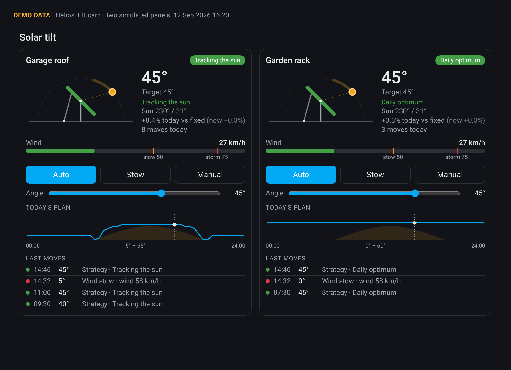

Helios Tilt works out where the sun is, picks the best angle for each panel and drives your linear actuator there. When the wind picks up, it stows the panels first.
One device per panel, set up from the UI. Everything runs locally: no cloud service and no extra Python packages.
The NOAA algorithm with refraction, checked against reference values, and a clear-sky model to weigh the angles.
Fixed annual optimum, a seasonal curve, one move a day to the day's optimum, or full tracking with a cloudy-day mode and night park.
Stows on wind or gusts from your weather entity and anemometer, in any unit. Resumes after a calm period; storm mode latches for hours.
A cover, a number, a script, or a dumb actuator on two relays (such as a Tuya ZG-2002-RF): timed runs with an interlock, a countdown fail-safe, guided travel calibration and automatic homing. Linear or calibration-table mapping and position or inclinometer feedback.
Your own rain, snow and temperature sensors, custom stow triggers, quiet hours (the night park still happens), a timed stow and an optional wind direction rule. Attributes show which source drives each decision.
Never commands a moving actuator. Minimum interval, deadband, hysteresis, a pause after manual moves, and a repair notice when an actuator gets stuck.
A side view with the sun, a wind gauge, Auto/Stow/Manual buttons, an angle slider, today's plan and the last moves. Loaded automatically.
Two cheap relays are enough. Tested on a real Tuya ZG-2002-RF dual relay (Zigbee2MQTT) driving an attic window opener.
Open relay switch.<name>_l1
Close relay switch.<name>_l2
Open countdown number.<name>_countdown_l1
Close countdown number.<name>_countdown_l2Zigbee2MQTT: power_on_behavior off on both channels; inching off, or longer than full travel × 1.15 + 5 s. Fuse the supply. Full guide and wiring.
Every minute, and whenever the weather or an actuator changes, the first rule that applies wins.
Why the maximum angle all autumn and winter? At 52° N the best daily angle is about 58° in October and 75° at Christmas, steeper than most mounts allow, so every strategy clamps to your maximum. Prefer a weather entity with gusts (e.g. Buienradar).

The bundled card, rendered from demo data.
Helios Tilt is software. It can't see your mount, and Home Assistant can go offline at the wrong moment.
HACS, a restart, and a weather entity or wind sensor.
type: custom:helios-tilt-card
title: Solar tilt
entities:
- sensor.garden_target_angleWiring examples (ESPHome, MQTT, scripts), a dummy cover for testing, entities, actions and troubleshooting are in the README.